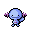

Pokédex / #194
Wooper #194
WaterGround
When it walks around on the ground, it coats its body with a slimy, poisonous film.
Generation 2 · Johto

Stats
| Attack | 45 | |
|---|---|---|
| Defense | 45 | |
| Sp. Atk | 25 | |
| Sp. Def | 25 |
In the wild
| Wild level | 20–30 |
|---|---|
| HP | 55 |
| Experience | 7 |
| Egg groups | Water 1, Field |
Evolution
- Evolves into Quagsire at level 35.
Moves
| Level | Move | Type | Category | Power | Energy | Cooldown | Effect | |
|---|---|---|---|---|---|---|---|---|
| 1 | Tackle | Normal | Physical | 15 | 15 | 1s | Tackle is one of the most common and basic moves a Pokemon learns. It deals damage with no additional effects. | |
| 5 | Water Gun | Water | Special | 40 | 45 | 9s | Water Gun inflicts damage and has no secondary effect. | |
| 10 | Mud Shot | Ground | Special | 55 | 60 | 9s | Mud Shot deals damage and lowers the target's Speed by one stage. | |
| 15 | Slam | Normal | Physical | 80 | 80 | 12s | Slam inflicts damage and has no secondary effect. | |
| 20 | Mud Bomb | Ground | Special | 65 | 80 | 10s | Mud Bomb deals damage and has a 30% chance of lowering the target's Accuracy by one stage. | |
| 25 | Amnesia | Psychic | Status | – | 75 | 60s | Amnesia raises the user's Special Defense by two stages. | |
| 30 | Earth Power | Ground | Special | 9 | 100 | 21s | Earth Power deals damage and has a 10% chance of lowering the target's Special Defense by one stage. |
Field abilities
DigWaterfallFlashSurfDiveHeadbutt
Special abilities
DampWater Absorb
Egg moves
Acid SprayAfter YouAncient PowerBody SlamCounterCurseDouble KickEerie ImpulseEncoreGuard SwapMud SportRecoverSleep Talk
Technical machines
BideBlizzardDefense CurlDouble EdgeDouble TeamDynamic PunchEarthquakeHailHeadbuttIce BeamIce PunchIron TailMimicMud SlapRageRestSafeguardSandstormSludge BombSubstituteToxicWater Pulse
Drops
| Item | Amount | Chance | |
|---|---|---|---|
| water gem | 1–3 | 100% | |
| sandbag | 1 | 16.7% | |
| rare sandbag | 1 | 2.86% | |
| clay lump | 1 | 2.86% | |
| wooper doll | 1 | 0.1% | |
| Splash Plate | 1 | 0.001% | |
| Earth Plate | 1 | 0.001% | |
| TM 12 | 1 | 0.001% |